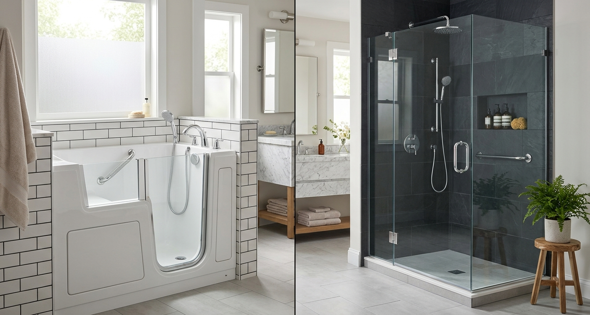

Helpful guides for planning ahead
Practical, plain-language answers about costs, comparisons, coverage, and safety. Every guide below is published, fully sourced, and dated — expert-review credits appear once a qualified review is completed.
FEATURED · COMPARING YOUR OPTIONS
10–12 min read
Walk-In Tub vs. Walk-In Shower: Which Is Better for Your Home?
The decision most families weigh first. Compare entry, bathing experience, wheelchair access, cost, installation, and maintenance — with a decision checklist at the end.
Published July 2026 · Sources checked July 2026
Read the guide →

Costs and Planning
Comparing Your Options
Safety and Accessibility
Paying for Improvements
Done reading and ready to plan?
See whether qualified bathroom professionals serve your area.